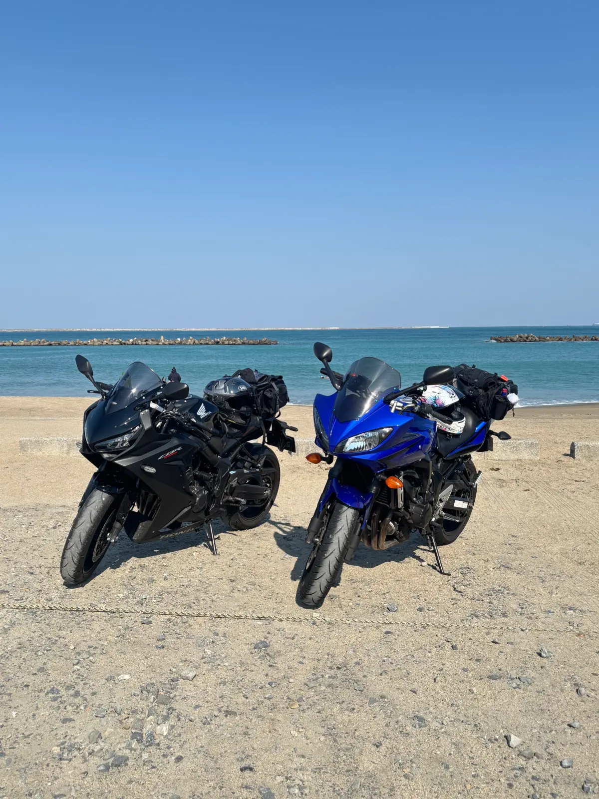
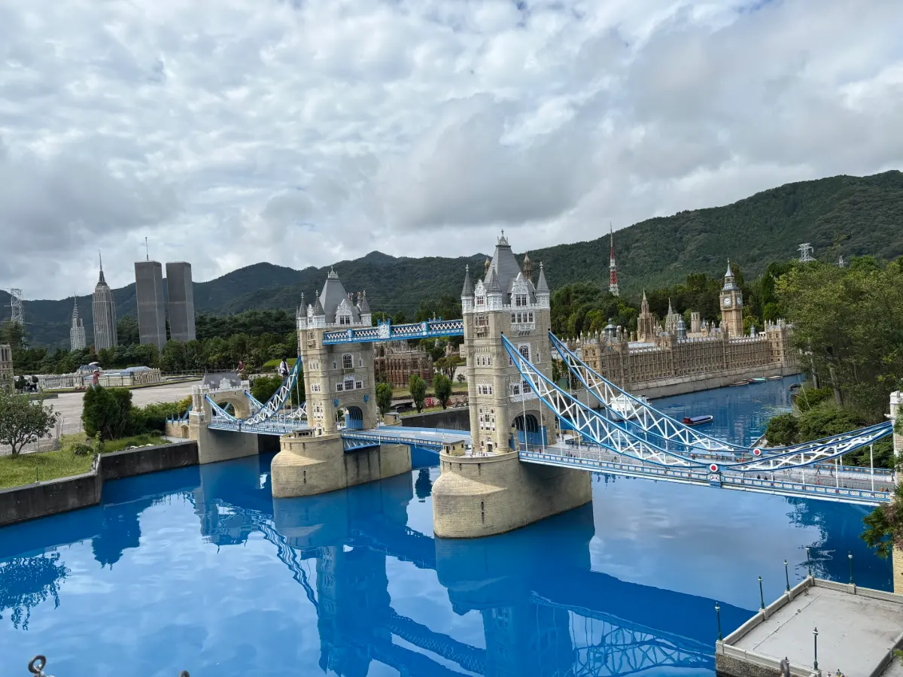
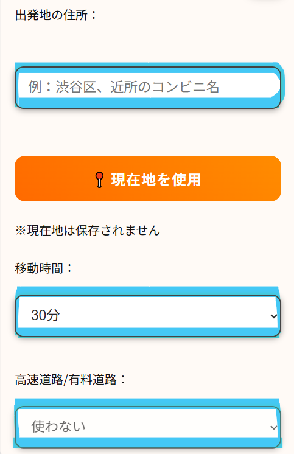
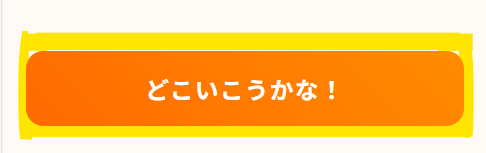

どこいこMap コラム
関東の日帰りツーリングおすすめスポット｜ 初心者でも走りやすい目的地紹介
執筆日：2026/06/01
大型免許取得して、もうすぐ1年になります！ 今回は、関東の日帰りツーリングで実際に行ってよかった場所や、 初心者の私でも走りやすかったスポットを紹介します！
- ツーリングどこ行く？
- 初心者でも走りやすい場所知りたい！
- 日帰りで気持ちよく走りたい！
そんな方の参考になったら嬉しいです！
阿字ヶ浦海水浴場 （茨城県ひたちなか市）

海辺を走りたい！ 海を背景にバイクの写真撮りたい！ と思って探したのが阿字ヶ浦海水浴場でした！
私はシーズンオフの3月のお昼すぎに行ったのですが、 駐車する場所は選び放題でした！ しっかりベスポジを確保！！
海辺ツーリングをしっかり楽しめました！ 道も広くて走りやすかったです。
すぐ近くにひたちなか海浜公園があるので、 海辺映え写真を撮って、 海風にあたって黄昏れた後に寄ってもいいですよね！
公園先に行って夕方に海辺もいいですね🥹 デトックスにも最適！
近くに、ほしいも神社というスポットもありまして、 金色のバイクあるみたいです！ 行ってみればよかった。。！ 次回チャレンジします！
ほしいも神社の公式サイトはこちら!
公式サイト
スポット情報
- 所在地：茨城県ひたちなか市
- 駐車場：あり
- おすすめ度：★★★★★
道の駅 保田小学校 （千葉県安房郡）
こちらも走りやすい！！
高速を降りてすぐにあって、 走った高速道路も広くて緑に囲まれていて、 充実したツーリングができた記憶があります！
保田小に到着して、バイカーすごく多かったです🏍️🏍️
こちらの道の駅は、 廃小学校を活用して作られた道の駅！
食堂もあって、 懐かしの揚げパンや給食も食べられます！！
大人になった今では、 「給食」って響きがもう懐かしい。。
また、カフェも併設されていて、 デザートもいただけて幸せでした🥳
揚げパンしっかり食べたのに。。笑
校内も見学することができて、 終始懐かしさを感じられてとても楽しかったです！
また、小学校に宿泊もできるそうで！ 学校に泊まったことないので、 廃校×道の駅ならではですよね！
この日訪れた際は予約が埋まっており泊まれなかったので、 いつかリベンジしたいです。。！
スポット情報
- 所在地：千葉県安房郡
- 駐車場：あり
- おすすめ度：★★★★★
道の駅 保田小学校の公式サイトはこちら!
公式サイト
東武ワールドスクエア （栃木県日光市）

とにかく走りやすい！！
日光方面の道中もかなり気持ちよく走れます！
「なんか運転上手くなったかも…！」 って気持ちになりながら走ってたのを覚えてます。笑
免許取り立ての目的地にもおすすめです！
東武ワールドスクエアは、 世界の建造物をミニチュアサイズで再現しているテーマパークです！
細かい作り込みに感動したり、 人形が音楽に合わせてくるくる回ってたりと、 とても楽しめました！ 世界旅行気分🌍
実際に職人さんが微調整している姿も見れたりしました！
私が訪れた時、 日本の首相が石破さんだったので、 日本の国会議事堂の前にミニチュア石破さんがいました。
ガイドさんの話を聞いたところ、 首相が変わればその人形は交換されてしまいますとのことで、 今は高市さんになってるでしょう😂
そのぐらい細部まで表現されていて、 感動したのを覚えています！
東武ワールドスクエアは、 道中のライディングも楽しめるので、 ツーリングの目的地におすすめです！
日光や宇都宮、鬼怒川など、 周辺にも様々なスポットがあるので、 一日中ツーリングができちゃいます！
スポット情報
- 所在地：栃木県日光市
- 駐車場：あり
- おすすめ度：★★★★
東武ワールドスクウェアの公式サイトはこちら!
公式サイト
行き先に迷ったら「どこいこMap」もおすすめ！
いかがでしたか？？
今回は3ヶ所のスポットを挙げてみました！
でもでも、 「もう知ってるんだよな〜」 「まだ行ったことない場所が知りたい！」 っていう方もいますよね！
有名スポット巡りも楽しいですが、 最近は「知らない場所に行ってみるツーリング」も好きになってきました！
そこで作ったのが、 どこいこMap です！
現在地や自宅、 自宅近くのコンビニなどの出発地を入力して、 どのぐらい走りたいかの片道時間を選択するだけ！

あとは「どこいこうかな」ボタンを押すだけです！

スポット版では、
- 観光地
- 飲食店
- 自然を感じる場所
を完全ランダムで3件提案してくれます！
他にも、
- グルメ特化
- 観光地特化
- 自然スポット特化
- 気持ちよく走れる道特化
などがあります！
自分で作っておきながら、 「今日はどこ出るかな〜」 ってつい回したくなってしまいます。。笑
「走りたいけど目的地決まらない！」 そんな日に使ってもらえたら嬉しいです！
また次の記事を読んでいただけると嬉しいです！
© どこいこMap